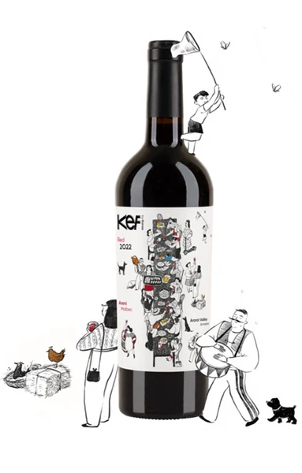

An Armenian Celebration in Every Glass
Areni Noir · Malbec | Ararat Valley · 2022

The world's oldest known winery was discovered in 2007 in the Areni-1 cave complex in Armenia, dating back approximately 6,100 years. Archaeologists unearthed fermentation vats, a wine press, storage jars, and domesticated Vitis vinifera grape seeds — the earliest evidence of organized winemaking.
The biblical story of Noah landing on Mount Ararat and planting vineyards further roots Armenia in the origin story of wine. The South Caucasus is where viticulture began — centuries before France, Italy, or Spain even existed as wine regions.
One of the oldest continuously cultivated grape varieties in the world — approximately 6,000 years of unbroken history. Named after the village of Areni in Vayots Dzor, some researchers even suggest it could be an ancestor of Pinot Noir.
Red cherries, pomegranate, currants, and warm spices. Medium tannins with high acidity and a velvety, lingering texture.
Often compared to Pinot Noir and Sangiovese for its elegance and aromatic complexity — yet entirely unique to its Armenian terroir.
Thrives in high-altitude continental climates with volcanic soils — conditions that concentrate its distinctive flavors.
A grape that has survived empires, invasions, and centuries of change — a living connection to humanity's first wines.
Founded in 2003 by Eduardo Eurnekian, an Argentine-Armenian businessman who wanted to reconnect with his ancestral roots. "Karas" means "amphora" in Armenian — the ancient clay vessels used for winemaking for 6,000 years. Located in the Armavir region, at the foot of Mount Ararat, on volcanic soils. Now led by Juliana Del Aguila Eurnekian, Eduardo's niece, vintner and sommelier.
The legendary French "flying winemaker" from Bordeaux. Consultant to 150+ estates across 14 countries. Pioneer of fruit-forward, structured blending. He stated Armenian wines were among his top 3 alongside French and Argentine.
Passed away March 20, 2026 — making this wine part of his extraordinary legacy.
Young Argentine from Mendoza who moved 8,700 miles to Yerevan. Has been pioneering work with indigenous Armenian varieties from scratch — no prior research existed at scale. Works alongside Armenian enologist Zara Khechechyan.
"KEF" means "feast" or "celebration" in Armenian — an invitation to celebrate life. A blend of Areni Noir and Malbec, marrying Armenia's oldest indigenous grape with a prestigious international variety, grown in the volcanic soils of the Ararat Valley.
Deep ruby red with violet reflections
Red fruits, subtle spice, floral notes
Balanced acidity, soft tannins, elegant finish
13.5% · Serve at 16–18°C
Areni Noir + Malbec
Ararat Valley, Armenia
Delicate red fruit aromas. Bright, vibrant acidity. Pure terroir expression. 6,000 years of unbroken heritage — the soul of the blend.
Deep structure and rich tannins. Body, depth, and power. An international variety that thrives in volcanic soils — from Argentina to Armenia.
This blend embodies Karas's philosophy: bridging Armenia's ancient winemaking culture with global expertise.
Volcanic soils from Mount Ararat — basalt, limestone, volcanic tuff, and alluvial stones. Extreme conditions that produce grapes with thick skins, concentrated flavors, and a marked identity.